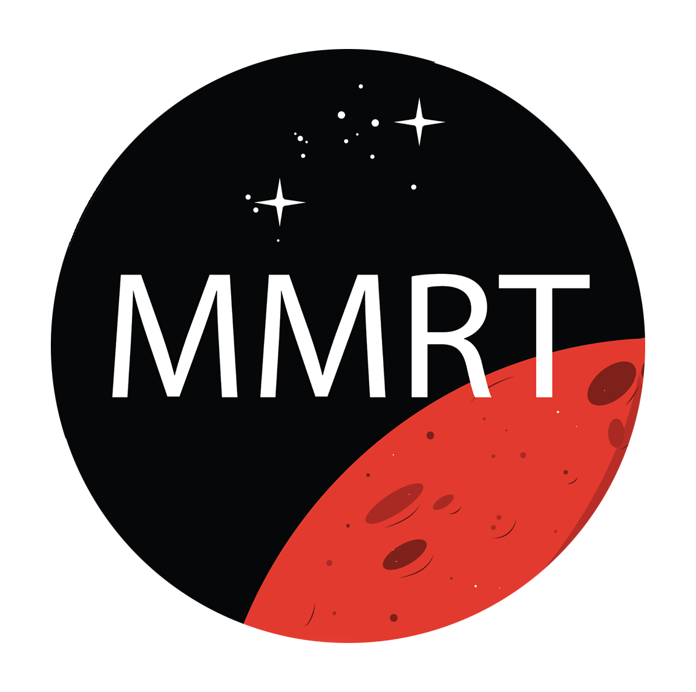
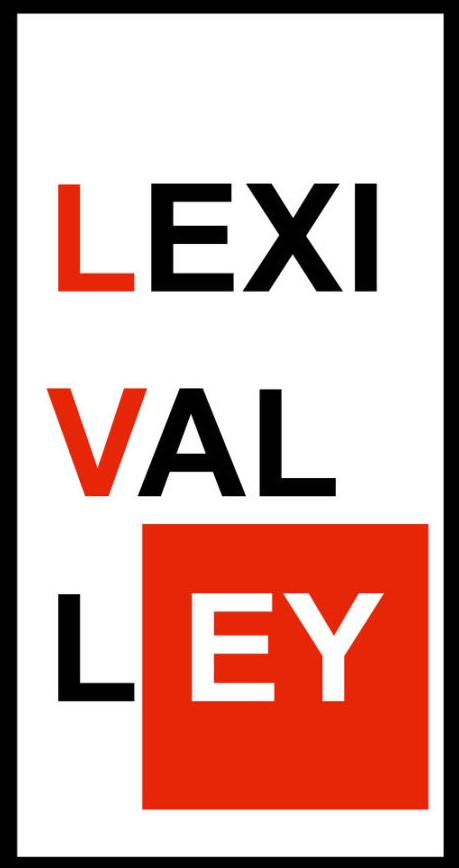
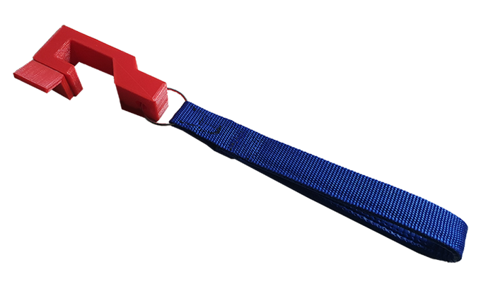

Projects and Teams:
McMaster Mars Rover Team:
Being a part of a team that specialized in tackling the future is very exciting. Currently I am part of the communications team, and we are working towards long distance communication via custom made antena. I work on Ubuntu writing the communications program in Robot operating system. Our current goals are to participate in the Ontario Mars Rover Rally.
McMaster EcoCar Challenge Team:

EcoCar Challenge provided me the opportunity to work towards a greener future. I am part of the Connected and Automated Vehicles team, as a Adaptive Cruise Control programmer but I soon hope to join the Human-Machine Interface Team. Currently, I am working with the other CAVs members to develop a working model of a fully automated vehicle in MATLAB. It is a vast project with over 30 members in the total team.
LexiValley Inc. - Project Knight:
LexiValley Inc has many projects going on simultaneously. I am working on a project to utilize Center for Integrated Transport and Mobility's (CITM) networking Node to create a web application along with a mobile application for tracking a vehicle's location through utilization of image processing and neural networks.
MacChangers:

MacChangers is a program in McMaster University that encourages students to tackle the global Sustainable Development Goals. My team focuses on tackling environmental problems brought by plastic polution. We have narrowed our focus down to plastic receipts. Currently, we are on the verge of developing an mobile application that helps reduce receipts by storing them in your phone.
Mechanical Hand:

The objective of the project was to design the train gear, and have the device pick up items using the index finger and thumb. During this project, I was assigned to a team consisting 3 engineering students. The task required key understanding of Autodesk Inventor, and Gear Train & Ratio. The final product fit perfectly into the arm and was able to pick up objects while keeping within the required input and output speeds. This project highlighted my ability to work in teams, work within constraints, meet deadlines on time and solve problems with a head strong mentality.
LoopHole:
The device was designed for a client with multiple sclerosis. We were a team of 4 engineering students, tasked to come up with a solution for the client’s difficult of opening the door. The aim of the design was to reduce the motion required by the hand to open the door. The device was made in precision to the client’s door handle and was made with affordable materials: 3D PTEG plastic, polyester, stainless still. The device completely eliminated the need for the client to rotate their wrist and relieving the client from the pain associated with opening the door to their apartment. This project demonstrated my ability to work in teams, take initiative towards ideas, take the role of a leader when needed, and solve problems with a head strong mentality.
Graphical Art:
This project started off with converting existing paintings and sketches of my own into digital illustrations. This slowly evolved into making commissions for different artists to make digital illustrations of their art. This project involved cooperating with different people and editing countless hours to hold up the value of outstanding pieces of art and photography. This project involved cooperating with different people and editing countless hours to hold up the value of outstanding pieces of art and photography. This projected elevated my skills in Adobe Illustrator and Photoshop, and exposed me to concept of digital communication.